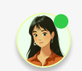

Know me more
Hi, I'm Manahil Haroon — an aspiring Web Designer passionate about creating user-friendly designs.
Delivering thoughtful and growing work as I build my skills with real-world projects is my current goal.
I'm currently a UI/UX and Web Design intern based in Islamabad, Pakistan — exploring how great design shapes meaningful and intuitive user experiences.
This journey is just beginning, and I'm excited to grow with every layout, line of code, and design decision I make.
My career
AKSA - SDS (Islamabad)
Doing tasks like competitor research, user persona creation, and Figma. Growing skills in interface design, layout, and usability with guidance from mentors.
NUML University
Built small projects using C++, OOP concepts, and basic database structures.
Expertise
Get in touch
 I'm always excited to explore new projects and creative challenges. Share your thoughts and goals so we can start something amazing together.
Location:
Islamabad, Pakistan
Contact:
0301-8552666